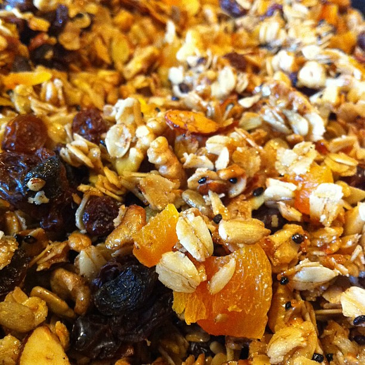

Homemade Granola
Home

Description
This is one of my favorite recipes of all time. Why? Well is extremely customizable and is one of the backbones of my home cooking.
This granola can be customized so it includes your favorite toppings. The important thing here is to learn the base ratio. However, I will add two iterations so you have somewhere to start.
First iteration: Chocolate Granola
Ingredients
- 2 cups of raw rolled oats
- 1/2 cup of slivered almonds
- 1/2 cup of puffed rice
- 1/3 cup of neutral taste oil. I personally use avocado
- 1/4 cup of agave syrup.
<1i>1 tbspn of vainilla extract
- 2 to 2.5 tbspns of cocoa powder
- Optional, 1/2 tspn of espresso powder
- 2 pinches of salt
Second iteration Cinnamon Granola
Ingredients
- 2 cups of raw rolled oats
- 1/3 cup of coconut flakes
- 1/3 cup of puffed rice
- 1/3 cup of pumpkin seeds
- 1/3 cup of neutral taste oil. I personally use avocado oil
- 1/4 cup of agave syrup. Honey also works wonders here
<1i>1 tbspn of vainilla extract
- 2 tbspns of cinnamon powder
- 2 pinches of salt
Optional Ingredients
- Dried cranberries
- Chocolate chips
- Any other dried fruit of your choice.
Steps
- Preheat an oven for 325 F
- In a large bowl combine the oats, the toppings (puffed rice, pumpkin seeds, etc.) and the salt.
- Then add the wet ingridients and mix until the granola mixture is distributed
- Spread the granola mixture on a baking sheet that has been previosly greased or it has a baking mat. The key here is to spread it as thin and even as possible.
- And into the oven goes for 15 minutes.
- After 15 minutes, flip the mixture so it toast in both sides. Put it back in for 12-15 minutes until color of your preference. I usually go for golden brown.
- After is done let it cool. After is cold, mix it with any dried fruit or chocolate chips. Store it in an airtight container.